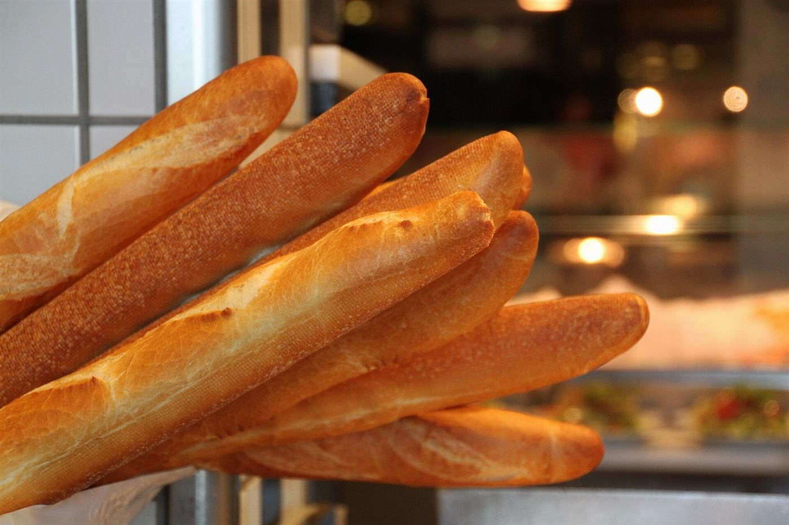
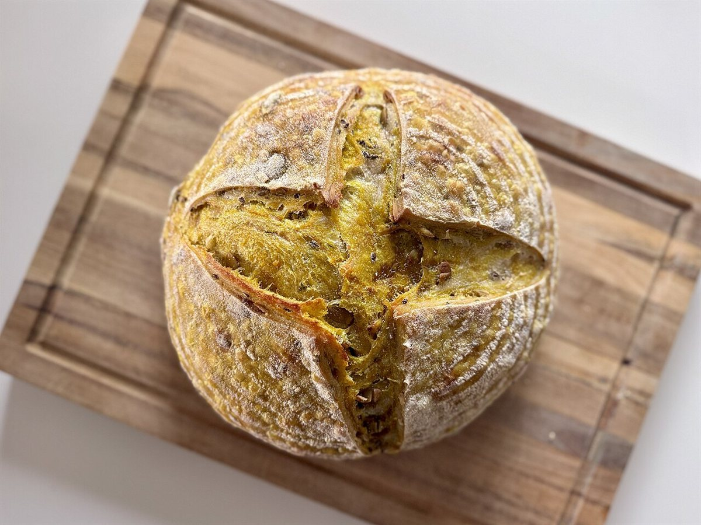
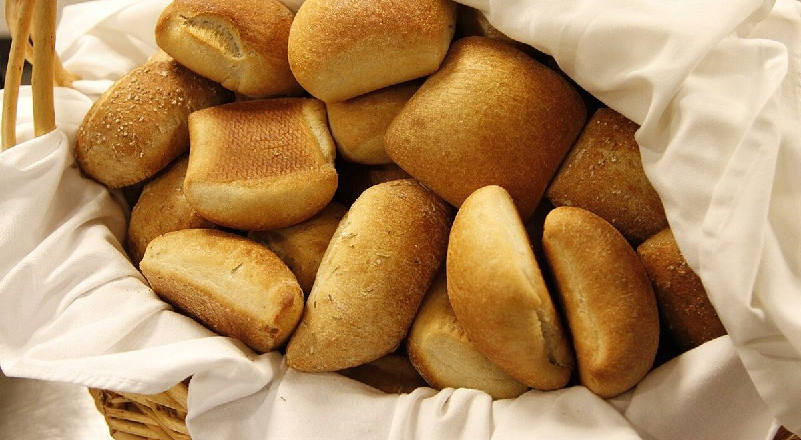
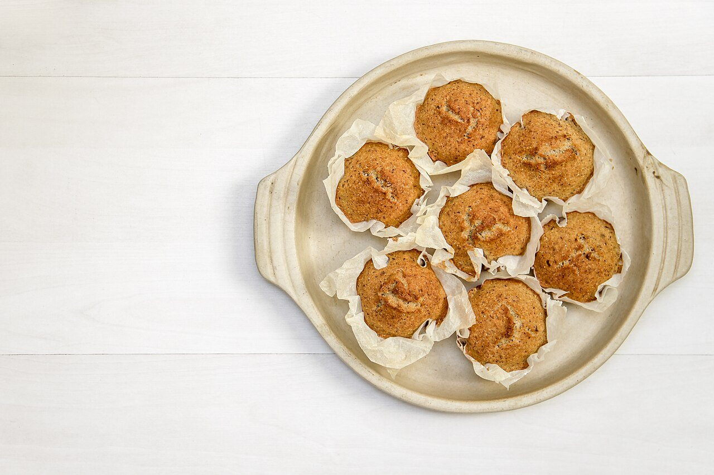

制作側の連想
手動ふいごを、配置図にしてみる
このサイトは、押したり引いたりして風を送る手動ふいごを図にしたつもりで作りました。六つの部位に番号をふり、上の図と並べています。制作側の連想で、お店の理念・由来とは無関係です。実際の道具の仕様を示すものでもありません。
凡例
六つの部位
- 1吹き口(ノズル)先に向かって細くなる、風を一か所に集めて送り出す筒。
- 2蛇腹(ひだ革)上板と下板のあいだに折りたたむ、伸び縮みする革の部分。
- 3上板押し下げる側の板。空気を押し出す力を受けとめる。
- 4下板土台になる側の板。上板と向かい合って空気をはさむ。
- 5取っ手上板につけた、手で押し引きするための持ち手。
- 6吸気弁広がるときだけ開いて、空気を取り込む小さな弁。



ギャラリー(イメージ)
パンのイメージ写真
この下の写真はイメージです。お店の商品の写真は、準備が整ってからご用意します。
写真はパンやコーヒー豆などのイメージです。お店のものではなく、お店で提供している商品を示すものでもありません。
ご案内
お店のこと(確認できたものだけ)
| 所在地 | 〒314-0031 茨城県鹿嶋市宮中2071-3 |
|---|---|
| 電話 | 準備中 |
| 営業時間 | 準備中 |
| 定休日 | 準備中 |
| ご予約 | 準備中 |
| 駐車場 | 準備中 |
| SNS | Instagram @kashimapan |